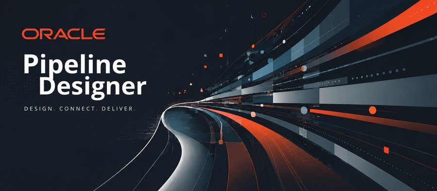

Oracle Pipeline Designer
The Oracle JET application was running an outdated theme — visually inconsistent, WCAG non-compliant, and misaligned with Oracle's Redwood direction. Three heuristic failures dominated: inconsistent components, missing status feedback, and no form validation. We audited every screen, rebuilt the layout grid around Redwood tokens, and worked within JET's component constraints alongside developers to ship a modern, accessible UI without breaking the pipeline.
View Case Study →